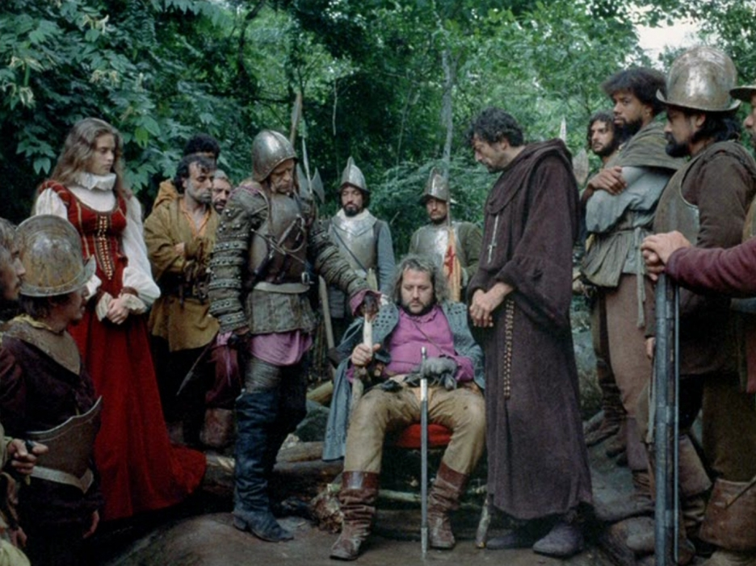

The adventures of the Spanish conquistadors in Werner Herzog’s film Aguirre, the Wrath of God (1972), colonizers and exploiters of the forest and its natives, all die (except for Aguirre) from New World diseases, explosions, and arrows. Their dreams of conquering the New World, "converting" its natives, and forming a new nation are challenged by not only those natives who already inhabit the New World, but by the land itself. Attempts to define the relationship between the colonialists and nature appear often in reviews and criticism on Aguirre, leading some critics to argue that Herzog’s films, but especially Aguirre, find that “the primary fact of human existence is confrontation with a beautiful but implacable nature” (Brockmann 330). But it is important for this essay to note how the film also suggests that those social and legal constructions it caricatures as inferior to nature—governments, social divisions—stem from the implacability and cruelty of nature itself. The film suggests not only the callousness of nature (or nature as God) but also offers a representation of that same apathy for human life often employed in colonial nation-building. And in Aguirre, the Spanish conquistador dominates the crew in a particularly cruel and unrelenting way that, as critics have noticed, creates a fictional-historical connection to the fascism of Nazi Germany (Waller). Therefore, in Aguirre, Herzog forms a narrative that re-contextualizes German fascism through historical anachronisms.
The degree to which critics characterize Aguirre as a historical film varies widely. Gregory Waller argues that, though the film is certainly historical in the sense that it recreates a “historical milieu” of colonial and imperial powers, it is more concerned with “history in a direct sense because it involves specific events and personages” (Waller 55–56). On the other hand, critics such as Stephen Brockmann argue that, unlike his fellow New German Cinema filmmakers, Herzog’s film is outside of history, independent from politics and social systems; that is, his films are dominated by nature rather than human beings and their social constructions (Brockmann 329–30). The answer lies somewhere in-between: Aguirre is a film that uses the “historical milieu” of colonialism to re-examine a recent German history of fascism. In doing so, in the same vein as many other films of the New German Cinema, it employs the camera to deal with the theoretical and practical issues of fascism from a cinematic-historical perspective.
An important formal element of the film is the role of the camera in representing the events in a realistic, documentative way. The opening shots of the film capture the expedition and its enormous crew in a line, like ants, as they traverse the cloudy mountain landscape. This shot not only presents the expedition as diminutive compared to the vastness of nature; it also foreshadows the basic relationship between the camera and the crew, as later the camera will follow this crew and become a part of the expedition. From this shot the film forms its meta-cinematic subversion: the misrecognition inherent in narrative fiction film-viewing—in which the audience suspends belief about the presence of the camera—becomes in Aguirre a vital part of repackaging its events as “real”; it helps make their rippling effects prescient and relevant. Several shots onboard the raft show the camera covered in droplets of water, unraveling the camera’s illusion of separation. Later shots that show characters speaking into the camera, matching the gaze of the audience, suggest a recognition of the camera and the audience. Employing this documentary approach, the camera’s relation is not just a voyeur to events unfolding on film; it is also a participant.
If the camera is inside the film world capturing its events, overlaid with voice-over narration by Brother Carvajal from his diary, it also creates an ironic counter-narrative that questions “history” as it is being made. Gregory Waller notes that as Brother Carvajal’s narration “officially” documents the events of the expedition, the film creates another “history," a counter-narrative against which the events of Brother Carvajal’s diary are compared (64). One incident in the film sees a native “blaspheme” The Bible by placing it to his ear (he cannot hear it "speak" the "word of God"). He is subsequently beheaded. Carvajal re-transmits the incident, dead-pan, as: "These savages are hard to convert.” Incidents such as these suggest that the camera’s true role within the film is to present and then subvert the official narrative of the expedition. As the camera documents history-making while consciously questioning its discourses, the film’s narrative moves both forwards and backwards through time and history; that is, the camera exists as an ahistorical technology within the film text, thereby modernizing these fictitious historical events through film form. In this way, the film presents time as an illusion, and it is this illusion of time that allows the film to transmit political allegories that are not so strictly relegated to a distinct colonial past. Indeed, like many films of New German Cinema, Aguirre thinks about a recent postwar past. And as the film’s blonde-haired, German-speaking Spaniard Lope de Aguirre, Klaus Kinski’s portrayal breaches the historical artifice of the film with his apparent anachronisms. These anachronisms make Aguirre more than just a representation of a callous Spanish colonialist: through his various proclamations, Aguirre also reveals himself to be the prototypical Hitlerian fascist.
Central to the film are the ways in which Aguirre is a representation of not only a Spanish imperialist but a German fascist. As Aguirre manipulates the crew, bending it to his own private means—he wants to build the “purest dynasty the world has ever seen”—his “desire is not to merely control the present and rule the raft, but to create the future and govern the world by the force of his will and imagination” (Waller 62). Aguirre is spurred on by his disillusionment about the beliefs of the crew around him, who in some form or another subscribe to Western ideals and subscribe to Christian theology, both of which inform their motives for colonizing. Aguirre’s disdain for the cultural and religious ideals of his colleagues becomes clearest in a scene near the end of the film, where he egomaniacally (and messianically) declares himself the “wrath of God.” He also expresses remarks that reveal his total infatuation with history-making, in another scene, where he says, “My men measure riches in gold. But it’s more. It’s power and fame.” So, while Carvajal’s diary entries oriented the film’s plot in a strictly chronological order, Aguirre’s wrath seeks out new paths from that which prevents him from becoming a “great man.”
Politicking his way from middle-management to emperorship (or, rather, to Führer), Aguirre’s politics are ruthless yet cunning. The film presents each new member dead in suspicious circumstances which, in the majority of cases, suggests Aguirre as the potential mastermind behind each act. Aguirre's rise to power could therefore be an elaborate scheme he has orchestrated from the very beginning of the expedition. But the film makes a clear attempt to avoid such broad declarations; its ambiguity is part of the point. The film mystifies the overwhelming “power” of nature by presenting it as an omniscient and maleficent Other. Its exotic Otherness at once beautifies then makes sublime the Amazon rain forest. It challenges the settlers’ colonial project and provokes an existential crisis among even the most faithful of the crew. At one point in the film, the fledgling crew low on men, Brother Carvajal says, “We lose men but we haven’t seen the enemy. Even El Dorado hasn’t been more than an illusion.” The opening credits of the film declare that El Dorado was a myth concocted by the natives to fool colonists, but Carvajal’s questioning of reality problematizes the holy goals of the expedition. It also expounds upon the film’s questioning of historical grand narratives and the illusions required to uphold them, which the film reveals formally through ahistoricism. Becoming “more than an illusion,” the quest for El Dorado becomes another quest for the crew to forge their name in history and capture personal wealth (or, in the case of the slave Okello, his freedom). Because the film views its events critically, it also reveals these dreams to be hypocritical, an illusion the Spaniards form to hide their materialist desires.
Yet, more than material, the illusory gold supplies greater metaphorical and political meanings throughout the film. In its most political aspects, the film also comments on the illusion of governments, that is, their explicitly artificial essence, especially in the context of an “unfinished” landscape that seemingly swallows the crew, one by one. If the promise of gold and wealth become the “truth” in the crew’s quest for nation-founding and history-making, the film also reveals the “truth” about human behavior outside the artifice of governments. While the rest of crew attempts to colonize the land and its natives, Aguirre attempts to harness nature’s apathy toward human life in his own politics. He decides that if he cannot beat nature, he will join it. Rather than a strictly “direct confrontation" (330), as Brockmann writes, the forming of nations becomes an escape, a line of flight, from nature’s indiscriminate devouring. Aguirre’s failure to form a fascist state becomes a tragic lesson in the theoretical and practical applications of his political absolutism. It is through this turbulent relationship between humans and nature that the film reveals the impetus behind those human constructions—governments, histories—it distantiates.
The film’s Brechtian effect makes a mockery of Aguirre’s rebellion most in the scene in which the expedition “secedes” from Phillip II. The camera frames the armed guards in a procession, like toy soldiers with blank stares. Brother Carvajal reads a “legal document,” authored by Aguirre, which declares the crew independent from the king. “The House of Habsburg is overthrown. You, Phillip the Second, are dethroned,” he says. Here, the film proposes that the legitimacy of governments lies in a combination of the spoken word (oral agreement) and the written word (legal agreement). The written word of the legal document then becomes “legitimate” once spoken to the rest of the expedition, Don Fernando’s (and Aguirre’s) constituency, who presumably can neither read nor write. As they declare Don Fernando “Emperor of El Dorado,” Fernando remarks, “Do you call this a throne?” Aguirre’s response feigns modesty while avoiding responsibility for the human toll of the crew’s monarchy. He says, “What is a throne but a plank covered in velvet, Your Majesty?” Aguirre’s appeal to practicality reveals the real beneath the symbolic. His deconstruction of monarchy pretends modesty but is, in fact, a subversion. Penetrating the artifice of governments, Aguirre the fascist stages his government like a play, deep in the bowels of the jungle.
Aguirre’s attempts at Machiavellian politics, a product of his fascist brutality, become a reflection of nature's doubleness. As the film theorizes through Aguirre, it submits that nature and fascism, totalizing forces that level out and subjugate, exist at the cost of human lives. Governments, societies, nation-building all become ways of protecting humanity from the abrasiveness of nature, a chthonian swamp that lures men in with the promise of fame, only to spit them out. For all his might, Aguirre cannot conquer the reality that natures presents. He succumbs to his own delusions—his grand narrative of a divine blessing, a “pure” and holy dynasty, which nature (and God) strike down. He becomes no better than his materialistic crew. Brockmann writes, “By the end of the film that bears his name, Aguirre is a man lost in a vast world that he can neither really see nor comprehend, and that world will inevitably destroy him” (333). Aguirre’s attempt at forging history becomes yet another fiction of history, as nature razes his fascist dreams of subjugation.
Conceptualizing a solution to the problems with some critics’ assessments of Aguirre involves understanding the matrix of discourses within the film, which involves nature, colonizers, and history. As the film frames the events in a documentary style, the discourses around what is “true” and what is “false,” what is fact and what is fiction, become aligned once one considers the necessarily escapist quality of the colonizers’ aspirations. This revelation challenges previous conceptions from critics about how Herzog’s film interacts with history and its discourses. As the film deconstructs its own narrative through form, the film’s final shot, circling the raft with a lone Aguirre among the many dead of his crew, shows the human toll of history-making. Aguirre’s fascist fantasies of power crumble as he attempts to overthrow nature and God. He attempts, and fails, to fool either of them.
Here are references for the two articles cited in this essay:
Stephen Brockmann. "Aguirre, Der Zorn Gottes (1972): Film and the Sublime." From "A Critical History of German Film," Camden House, 2010.
Gregory Waller. "Aguirre, The Wrath of God: History, Theater, and the Camera." From the South Atlantic Review, vol. 46, no. 2, May 1981. doi:10.2307/3199461.
But you can read them here (Brockmann) and here (Waller). Please forgive the annotations.